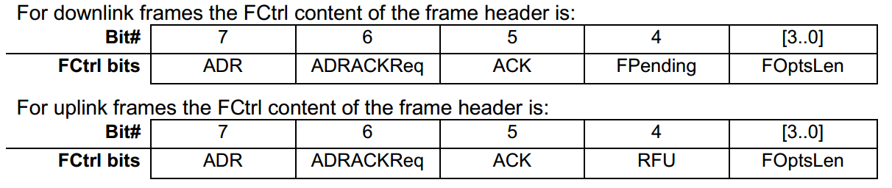

LoRaWAN ADR机制
LoRa network allows the end-devices to individually use any of the possible data rates. This feature is used by the LoRaWAN to adapt and optimize the data rate of static end-devices. This is referred to as Adaptive Data Rate (ADR) and when this is enabled the network will be optimized to use the fastest data rate possible.
LoRa网络允许终端设备单独地使用任何可能的数据速率.LoRaWAN使用这个特性去匹配并且优化静态终端的数据速度。这个叫做自适应数据速率(ADR),并且当他使能的时候，网络可能被优化到最快的数据速率。
Mobile end-devices should use their fixed default data rate as data rate management is not practical when the moving end-device causes fast changes in the radio environment.
当设备处于移动中造成无线电环境快速变化时，移动终端设备应当使用固定的默认的数据速率，因为数据速率管理不是很靠谱。
If the ADR bit is set, the network will control the data rate of the end-device through the appropriate MAC commands. If the ADR bit is not set, the network will not attempt to control the data rate of the end-device regardless of the received signal quality. The ADR bit may be set and unset by the end-device or the Network on demand. However, whenever possible, the ADR scheme should be enabled to increase the battery life of the end-device and maximize the network capacity.
如果ADR位被设置了，网络会通过适当的MAC层命令来控制终端设备的数据速率。如果ADR位没有被设置，网络不管接收信号的质量如何都不会试图去控制终端设备的数据速率。ADR标志位应当被设置或者不设置根据终端或者网络的需求。然而，无论何时，只要可能，为了增加终端设备的电池使用时间并且最大化网络容量，ADR功能都应当使能。
Note: Even mobile end-devices are actually immobile most of the time. So depending on its state of mobility, an end-device can request the network to optimize its data rate using ADR.
注意：就算是移动终端设备，实际上大部分时间还是不移动的。所以，终端设备可以使用ADR，根据它的移动情况，请求网络来优化它的数据速率。

If an end-device whose data rate is optimized by the network to use a data rate higher than its default data rate, it periodically needs to validate that the network still receives the uplink frames. Each time the uplink frame counter is incremented (for each new uplink, repeated transmissions do not increase the counter), the device increments an ADR_ACK_CNT counter.
After ADR_ACK_LIMIT uplinks (ADR_ACK_CNT >= ADR_ACK_LIMIT) without any downlink response, it sets the ADR acknowledgment request bit (ADRACKReq).
The network is required to respond with a downlink frame within the time set by the ADR_ACK_DELAY, any received downlink frame following an uplink frame resets the ADR_ACK_CNT counter.
The downlink ACK bit does not need to be set as any response during the receive slot of the end-device indicates that the gateway has still received the uplinks from this device.
If no reply is received within the next ADR_ACK_DELAY uplinks (i.e., after a total of ADR_ACK_LIMIT + ADR_ACK_DELAY), the end-device may try to regain connectivity by switching to the next lower data rate that provides a longer radio range.
The end-device will further lower its data rate step by step every time ADR_ACK_LIMIT is reached.
The ADRACKReq shall not be set if the device uses its default data rate because in that case no action can be taken to improve the link range.
如果终端设备的数据速率被网络优化到大于他的默认速率，那么他需要周期性地去验证网络是否一直收到上行数据帧。
上行数据帧计数器的每一次增长(每一次新的上行帧，重复性的传输不会增长计数器)，设备的ADR_ACK_CNT计数器增加。
当ADR_ACK_LIMIT上行帧(ADR_ACK_CNT >= ADR_ACK_LIMIT)没有任何下行回复时,设备设置ADR acknowledgment 请求标志位(ADRACKReq)。
网络必须在设定的ADR_ACK_DELAY时间内回复一个下行帧，任何伴随着上行帧接收到的下行帧都会复位ADR_ACK_CNT计数器。
在设备的接收缝隙期间，任何回复的下行的ACK标志位不需要被设置来指示网关一直接收到这个设备的上行数据帧。
如果在接下来的ADR_ACK_DELAY个上行帧内没有收到回复(例如，在一整个ACR_ACK_LIMIT+ADR_ACK_DELAY)，设备会尝试回复链接通过切换到相邻的低一级的速度，因为那提供了更远的无线距离。
终端设备将会进一步的降低它的速率一步一步每当ADR_ACK_LIMIT的次数限制到达。
ADRACKReq不应该被设置如果设备使用默认的速率，因为在这种情况下，没有任何操作可以提高链接的范围。
Note: Not requesting an immediate response to an ADR acknowledgement request provides flexibility to the network to optimally schedule its downlinks.
注意: ADR ACK不要求立即回复，网络对他的下行帧提供了弹性的优化计划。
Note: In uplink transmissions the ADRACKReq bit is set if ADR_ACK_CNT >= ADR_ACK_LIMIT and the current data-rate is greater than the device defined minimum data rate, it is cleared in other conditions.
注意：在上行的传输中，如果ADR_ACK_CNT>=ADR_ACK_LIMIT并且当前的速率高于设备定义的最小速率，此时ADRACKReq标志位被设置，那么他会在其他情况下被清除掉。